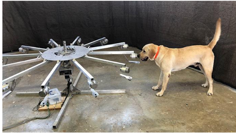

Investigation3.1.1.How Accurately Can Dogs Detect COVID?
Watch this youtube clip about dogs being trained to detect COVID-19.
Figure3.1.1.NBC Nightly News: Behind The Scenes With Dogs Being Trained To Detect COVID-19
The video introduces you to a yellow lab named Poncho. Poncho is one of nine dogs that are being trained to detect COVID-19. The University of Pennsylvania study described in the video was designed so that the dogs first smelled urine samples from patients that tested positive for COVID-19. This was the standard that the dogs used to judge other scents. After a short training period, the dogs were tested to determine how accurately trained dogs can detect COVID-19 through urine samples.
Let’s focus specifically on Poncho: The test consisted of Poncho smelling 12 samples. One of the samples contained urine from a COVID positive patient. The other samples contained urine from patients that tested negative for COVID and other scents. The samples were attached to a wheel that could be spun to randomize the location of the COVID positive sample. Poncho was trained to perform some kind of physical action to specify that the COVID positive sample was located.

Figure3.1.2.Poncho smelling samples on a wheel.
The video did not provide data for us to consider, but they stated that the dogs have over a 95% accuracy rate. Let’s say, for the sake of this investigation, that Poncho was tested 20 time and chose the correct sample 18 times. Later on we will look at real data from another study where sweat samples were used.
Checkpoint3.1.3.Matching Problem.
Identify the items on the left and match them to the appropriate items on the right.
Write Me...
Population
All of Poncho’s trials
Sample
Poncho’s 20 observed trials
Parameter
Poncho’s true accuracy rate over all trials.
Statistic
Poncho’s accuracy rate during the 20 observed trials
Variable
Whether Poncho correctly identifies the COVID sample
We can use the results of Poncho’s 20 trials to estimate his true accuracy rate. The statistic is the best point estimate for the parameter. So, we can estimate that Poncho’s true accuracy rate is 90% (for all trials, not just the 20 observed). However, we know that the sample statistic varies. If we were to repeat the experiment, Poncho could be correct a different number of times.
So, it’s a good idea to attach a margin of error to the point estimate. We can use the sample statistic and the margin of error to create a confidence interval.
Definition3.1.4.
Reword this.... measure of precision...A measure of how much we expect the sample statistic to vary from the true parameter witha. certain degree of confidence. A margin of error is the difference between an estimate and its upper or lower confidence bounds.
Definition3.1.5.
A confidence interval is an interval estimate that gives us a range of plausible values for the parameter.
Definition3.1.6.
Reword....The degree to which we can be confident that our confidence interval has captured the true value of the parameter. The confidence level is the proportion of times that the confidence interval will contain the true parameter if we were to repeat the experiment many times.
To construct the confidence interval, you first need to obtain an estimate for the standard error of the statistic. You can do this using the bootstrap method.
Checkpoint3.1.7.Describe Bootstrapping Process.
Describe how we could generate one bootstrap sample for this scenario? Solution Not Appearing!!!
Checkpoint3.1.8.Interpret Bootstrap Distirbution.
A bootstrap distribution based on 1000 bootstrap samples is shown here. Describe the resulting distribution, and also provide an interpretation for your estimate of the standard error of the statistic.
The boostrap distribution is centered at 0.90. So, this is Poncho’s true accuracy rate.
True.
write me...
False.
write me...
Hint.
write me
To be 95% confident that Poncho’s true accuracy rate is captured by our confidence interval, we take the standard error of the statistic and multiply it by 2. Then, we use this number as our margin of error. Therefore, the formula for a 95% confidence interval is:
\begin{equation*}
statistic \pm 2 \cdot SE
\end{equation*}
So, we’ll take our statistic of 0.90 and add and substract a margin of error of 2(0.068)=0.136. This gives us a confidence interval of (0.90 - 0.136, 0.90 + 0.136) = (0.764, 1.036). However, we know that the accuracy rate cannot be greater than 1.0, so we will adjust the upper bound to 1.0. Therefore, our final confidence interval is (0.764, 1.0).
Checkpoint3.1.10.Interpreting the Confidence Interval.
Select all correct interpretations of the 95% confidence interval of (0.764, 1.0).
We are 95% confidence that Poncho’s true accuracy rate is between 0.764 and 1.0.
answer specific feedback
We are 95% confidence that Poncho will correctly detect when someone has COVID-19 between 76.4% and 100% of the time.
answer specific feedback
We are 95% confidence that Poncho will correctly detect when someone has COVID-19 between 76.4% and 100% of the time during his 20 trials.
answer specific feedback
Poncho was correct 95% of the time during his 20 trials.
answer specific feedback
95% of the data will fall between 0.764 and 1.0.
answer specific feedback
Exploration3.1.2.How do the sample size and confidence level affect the confidence interval?
(a)
Suppose Poncho was tested 40 times, instead of 20 times and chose the correct sample 36 times.
What is the value of the statistic now?
What is the standard error of the statistic now? How has it changed?
Compute the new confidence interval.
Based on your answers above, tell me: As the sample size increases, what else changes and how?
(b)
Continue using the lager sample. Suppose we want to be more confident in our interval estimate.
How might we accomplish this? How could we increase the chance that we capture the true value of the parameter?
Compute a 99% confidence interval using \(2.58\cdot SE\) as your margin of error.
Based on your answers above, tell me: As the confidence level increases, what else changes and how?
Question3.1.11.Thinking about the confidence intervals....
How far are you willing to generalize your results?
What limitations or concerns should we be aware of?
Note3.1.12.
When your parameter of interest is a single proportion, the shape of the bootstrap distribution will be affected by the value of the statistic. The shape will be more skewed for values near 0 and 1 (as you saw above), unless the sample size is large.
What can we do when the sampling distribution is NOT symmetric? [We can’t change that we only have 20 trials! And we can’t change the fact Poncho had a have a high accuracy rate.] We use a different method to construct confidence intervals.
Use the percentile method.
Construct the bootstrap distribution.
Then locate the 2.5th and 97.5th percentiles. 95% of the values in the distribution will lie between these two numbers.
Use the 2.5th and 97.5th percentiles as the end points of your confidence interval.